Many different kinds of network element are encountered in network analysis. For circuit analysis it is necessary to formulate equations for circuits containing as many different types of network elements as possible. There are various methods for equation formulation for a circuit. These are based on three types of equations found in circuit theory:
The equations have to be formulated (represented in a computer program) automatically in a simple, comprehensive manner. Once formulated, the system of equations has to be solved. There are two main aspects to be considered when choosing algorithms for this purpose: accuracy and speed. The MNA, briefly for Modified Nodal Analysis, has been proved to accomplish these tasks.
MNA applied to a circuit with passive elements, independent current and voltage sources and active elements results in a matrix equation of the form:
| 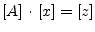 | (3.1) |
For a circuit with N nodes and M independent voltage sources:
The circuit is solved by a simple matrix manipulation:
| 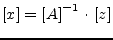 | (3.2) |
Though this may be difficult by hand, it is straightforward and so is easily done by computer.
The following section is an algorithmic approach to the concept of the Modified Nodal Analysis. There are three matrices we need to generate, the A matrix, the x matrix and the z matrix. Each of these will be created by combining several individual sub-matrices.
The A matrix will be developed as the combination of 4 smaller matrices, G, B, C, and D.
| 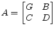 | (3.3) |
The A matrix is (M+N)(M+N) (N is the number of nodes, and M is the number of independent voltage sources) and:
The G matrix is an NN matrix formed in two steps.
If an element is grounded, it will only have contribute to one entry in the G matrix - at the appropriate location on the diagonal. If it is ungrounded it will contribute to four entries in the matrix - two diagonal entries (corresponding to the two nodes) and two off-diagonal entries.
The B matrix is an NM matrix with only 0, 1 and -1 elements. Each location in the matrix corresponds to a particular voltage source (first dimension) or a node (second dimension). If the positive terminal of the ith voltage source is connected to node k, then the element (k,i) in the B matrix is a 1. If the negative terminal of the ith voltage source is connected to node k, then the element (k,i) in the B matrix is a -1. Otherwise, elements of the B matrix are zero.
If a voltage source is ungrounded, it will have two elements in the B matrix (a 1 and a -1 in the same column). If it is grounded it will only have one element in the matrix.
The C matrix is an MN matrix with only 0, 1 and -1 elements. Each location in the matrix corresponds to a particular node (first dimension) or voltage source (second dimension). If the positive terminal of the ith voltage source is connected to node k, then the element (i,k) in the C matrix is a 1. If the negative terminal of the ith voltage source is connected to node k, then the element (i,k) in the C matrix is a -1. Otherwise, elements of the C matrix are zero.
In other words, the C matrix is the transpose of the B matrix. This is not the case when dependent sources are present.
The D matrix is an MM matrix that is composed entirely of zeros. It can be non-zero if dependent sources are considered.
The x matrix holds our unknown quantities and will be developed as the combination of 2 smaller matrices v and j. It is considerably easier to define than the A matrix.
| 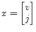 | (3.4) |
The x matrix is 1(M+N) (N is the number of nodes, and M is the number of independent voltage sources) and:
The v matrix is an 1N matrix formed of the node voltages. Each element in v corresponds to the voltage at the equivalent node in the circuit (there is no entry for ground - node 0).
For a circuit with N nodes we get:
| 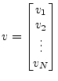 | (3.5) |
The j matrix is an 1M matrix, with one entry for the current
through each voltage source. So if there are M voltage sources
 , 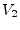 through 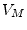, the j matrix will be:
, 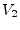 through 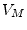, the j matrix will be:
| 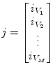 | (3.6) |
The z matrix holds our independent voltage and current sources and will be developed as the combination of 2 smaller matrices i and e. It is quite easy to formulate.
| 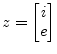 | (3.7) |
The z matrix is 1(M+N) (N is the number of nodes, and M is the number of independent voltage sources) and:
The i matrix is an 1N matrix with each element of the matrix corresponding to a particular node. The value of each element of i is determined by the sum of current sources into the corresponding node. If there are no current sources connected to the node, the value is zero.
The e matrix is an 1M matrix with each element of the matrix equal in value to the corresponding independent voltage source.
The example given in fig. 3.1 illustrates applying the rules for building the MNA matrices and how this relates to basic equations used in circuit analysis.
The G matrix is a 22 matrix because there are 2 different nodes apart from ground which is the reference node. On the diagonal you find the sum of the elements conductances connected to the nodes 1 and 2. The off-diagonal matrix entries contain the negative conductances of the elements connected between two nodes.
| 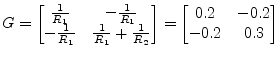 | (3.8) |
The B matrix (which is transposed to C) is a 12 matrix because
there is one voltage source and 2 nodes. The positive terminal of the
voltage source  is connected to node 1. That is why
is connected to node 1. That is why
| 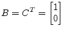 | (3.9) |
and the D matrix is filled with zeros only because there are no dependent (active and controlled) devices in the example circuit.
| (3.10) |
The x matrix is a 13 matrix. The MNA equations deliver a solution for the unknown voltages at each node in a circuit except the reference node and the currents through each voltage source.
| 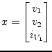 | (3.11) |
The z matrix is according to the rules for building it a 13
matrix. The upper two entries are the sums of the currents flowing
into node 1 and node 2. The lower entry is the voltage value of the
voltage source  .
.
| 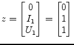 | (3.12) |
According to the MNA algorithm the equation system is represented by
| (3.13) |
which is equivalent to
In the example eq. (3.14) expands to:
The equation systems to be solved is now defined by the following matrix representation.
| 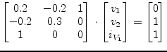 | (3.16) |
Using matrix inversion the solution vector x writes as follows:
The result in eq. (3.17) denotes the current through the
voltage source  is
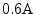, the voltage at node 1 is
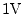 and the voltage at node 2 is 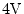.
is
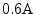, the voltage at node 1 is
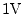 and the voltage at node 2 is 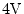.
Expanding the matrix representation in eq. (3.15) to a set of equations denotes the following equation system consisting of 3 of them.
| 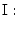 | 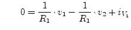 | KCL at node 1 | (3.18) |
| 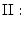 | 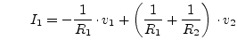 | KCL at node 2 | (3.19) |
| 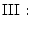 | 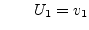 | constitutive equation | (3.20) |
Apparently eq. I and eq. II conform to Kirchhoff's current law at the
nodes 1 and 2. The last equation is just the constitutive equation
for the voltage source  . There are three unknowns (
. There are three unknowns ( ,
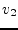 and 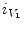) and three equations, thus the system should
be solvable.
,
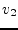 and 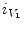) and three equations, thus the system should
be solvable.
Equation III indicates the voltage at node 1 is . Applying this result to eq. II and transposing it to (the voltage at node 2) gives
| 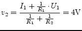 | (3.21) |
The missing current through the voltage source  can be computed
using both the results
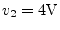 and
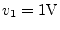 by
transforming equation I.
can be computed
using both the results
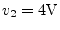 and
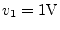 by
transforming equation I.
| 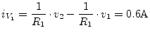 | (3.22) |
The small example, shown in fig. 3.1, and the excursus into artless math verifies that the MNA algorithm and classic electrical handiwork tend to produce the same results.